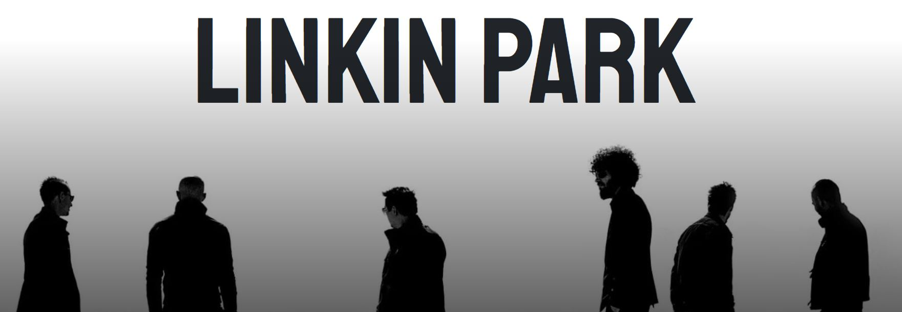
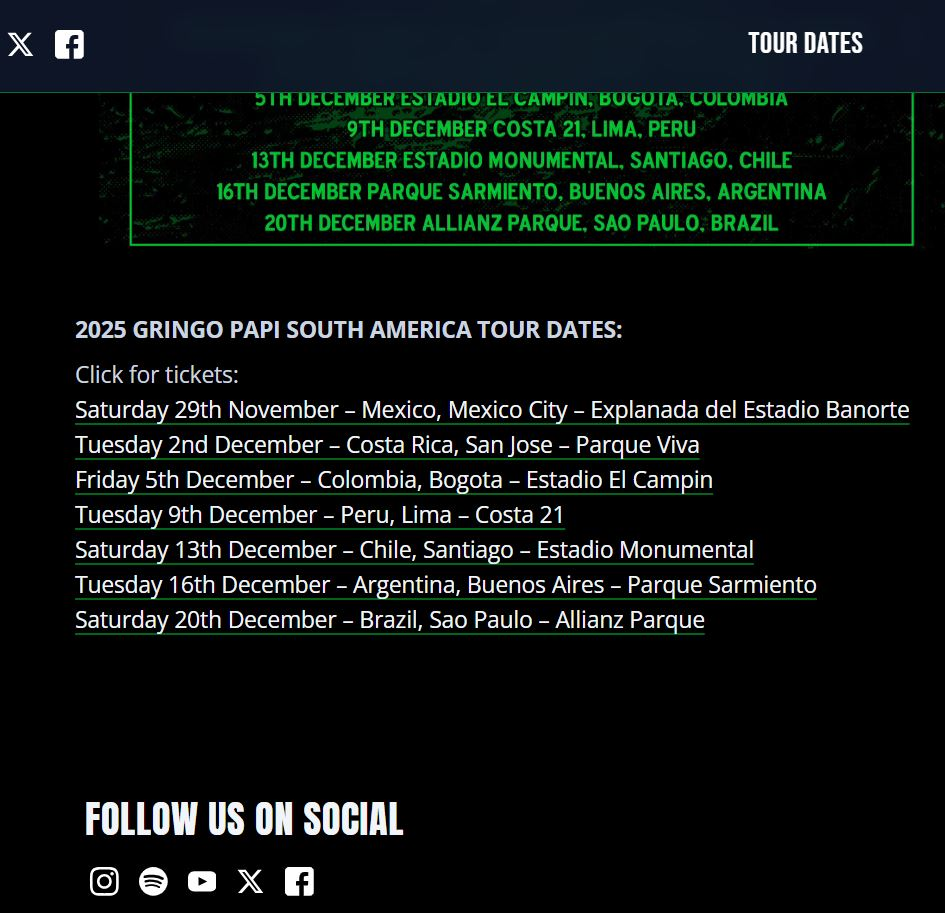
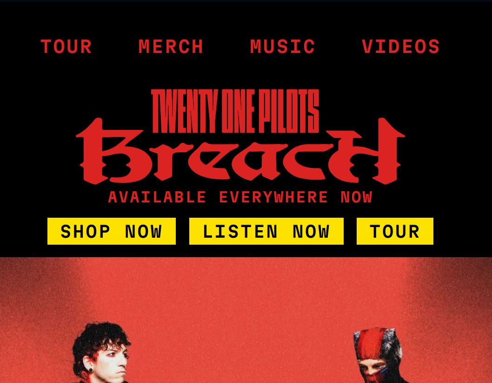

Caso de estudio
Linkin Park
Diseño y desarrollo de un sitio web completo para la banda Linkin Park, enfocado en crear una experiencia digital más cercana para los fans, integrando contenido informativo, discografía, noticias y comercio en una sola plataforma.
Proyecto académico · UX/UI + Desarrollo Web · WordPress, WooCommerce, PHP, JS


Problema
Sitios de bandas centrados solo en promoción
La mayoría de los sitios priorizan eventos, dejando de lado la experiencia del fan.
A partir del análisis de sitios de bandas como Twenty one pilots, Los Bunkers y Limp bizkit, se identificó un patrón común: plataformas enfocadas casi exclusivamente en la promoción de shows, con poca profundidad en contenido informativo o interacción.
Esto limita la experiencia del usuario, especialmente para fans que buscan explorar la historia, discografía y contenido relacionado con la banda en un solo lugar.
Análisis
Experiencia fragmentada y poco inmersiva
El contenido existe, pero no está integrado en una experiencia completa.
Los sitios analizados presentaban una estructura funcional pero limitada, donde la información se encontraba dispersa o en segundo plano. La navegación priorizaba eventos por sobre otros contenidos relevantes, generando una experiencia poco equilibrada.
Además, la falta de elementos interactivos y narrativa visual reducía el nivel de conexión emocional con el usuario.


Proceso
Construcción de una experiencia centrada en el fan
Se buscó integrar contenido, interacción y estética en un solo sistema.
El proceso incluyó investigación de referentes, definición de arquitectura del sitio y diseño en Figma. Se tomó como base visual la estética del álbum "Minutes to Midnight", utilizando su paleta de colores como guía conceptual.
Se diseñó una estructura completa que abarca múltiples secciones: inicio, banda, discografía, shows, blog y tienda, permitiendo una experiencia más rica y profunda para el usuario.
Solución
Plataforma integral con foco en contenido e interacción
El sitio se transforma en un punto central para la experiencia del fan.
Se desarrolló un sitio completo utilizando WordPress y WooCommerce, incorporando funcionalidades como tienda, blog de noticias y páginas dedicadas a la discografía y miembros de la banda.
Se añadieron elementos interactivos como modales, eventos dinámicos y secciones con contenido adicional —como datos curiosos— para enriquecer la exploración.
La música se presenta a través de una sección dedicada a los álbumes, permitiendo acceder a información detallada y reforzando el valor del contenido.

Resultado
Experiencia más completa y conectada con el usuario
El resultado es una plataforma que va más allá de la promoción de eventos, ofreciendo una experiencia más inmersiva e informativa. El sitio permite al usuario explorar, interactuar y conectar con la banda desde múltiples dimensiones, generando una mayor cercanía y engagement.
← Volver